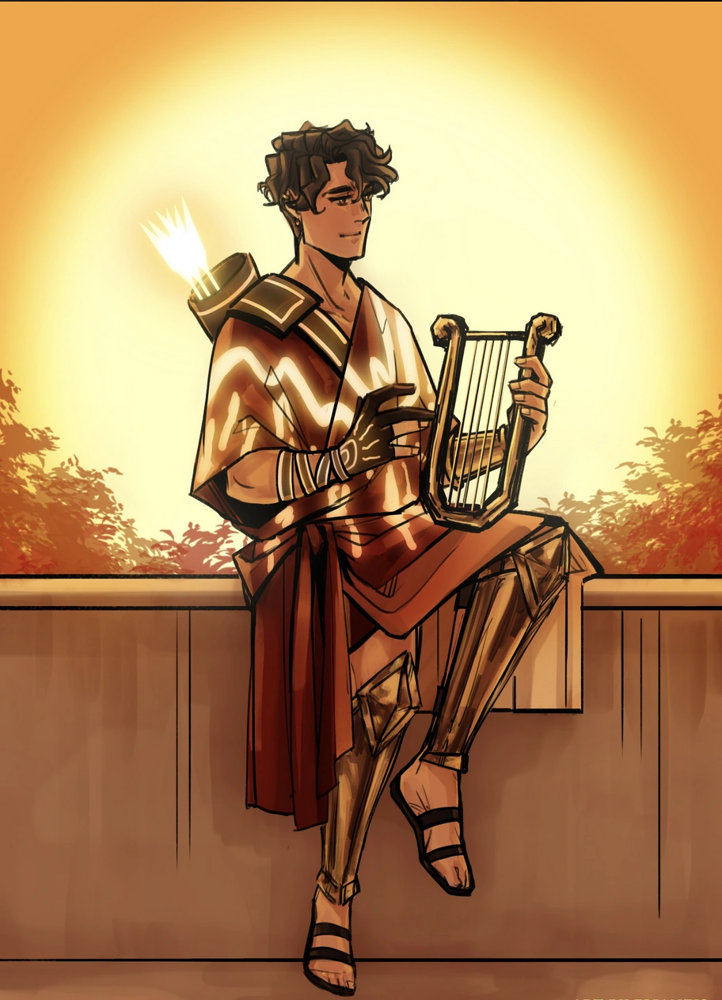

| Apollon | |
|---|---|
|  | |
| Zeichnung von Elianzis_Art | |
| Biografie | |
| Titel | Gott des Lichts und der Musik |
| Zugehörigkeit | Die Olympioniken |
| Familie | Die Olympioniken (Verwandte) |
| Zeus (Vater) | |
| Athene (Halb-Schwester) | |
| Ares (Halb-Bruder) | |
| Hermes (Halb-Bruder) | |
| Status | Unsterblich |
| Hinter den Kulissen | |
| Auftritte | Weisheits Saga |
| Original Stimme | Brandon McInnis |
| Deutsche Stimme | Rolle offen |
Apollon
Man weiß, dass ich ein Fan von Liedern bin - Apollon (Götter Spiele)
Apollon ist der Gott des Lichts und der Musik. Er ist einer der Olympier und ein Sohn des Zeus. Er dient als „Level 1“ von Zeus' Test für Athene während der Götter Spiele in EPIC: the Musical.
Biografie
Apollon wird von Zeus eingeladen, Athene zu prüfen, um Odysseus vor Kalypso zu retten. In „Level 1“ der Götter Spiele erklärt Apollon Athene, dass er wütend auf Odysseus ist, weil er mehrere Sirenen getötet hat, die Musik machen, die ihm Spaß macht. Athene erklärt Apollon, dass das Töten dieser Sirenen ein Akt der Selbstverteidigung war, da sie vorhatten, Odysseus und seine Crew zu ertränken, und dass andere Sirenen ihn nun meiden werden, damit sie in Ruhe ihre Lieder singen können. Daraufhin sagt Apollon, Odysseus solle freigelassen werden.
Auftritte
Trivia
- Apollons Instrument ist eine Lyra, eines seiner Symbole
- Obwohl Apollon oft als Sonnengott dargestellt wird, ist Helios der ursprüngliche Sonnengott
- Obwohl es im Musical nie erwähnt wird, ist Apollon der Sohn von Leto und der Zwillingsbruder von Artemis.